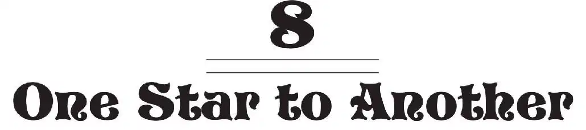
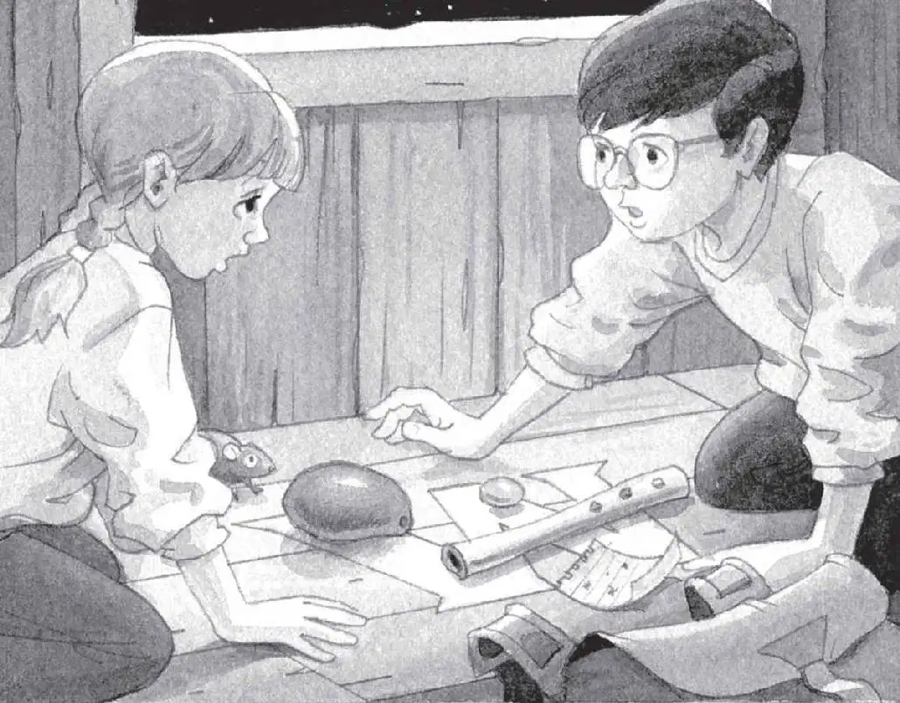
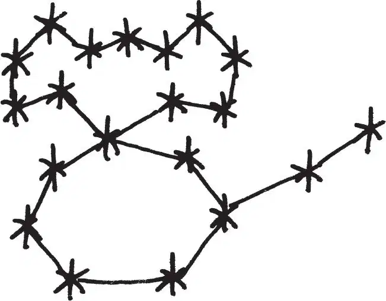

“Who was that guy?” said Jack. “What does his map mean?”
“I don’t know,” said Annie. “But let’s see if it works.”
Jack took a deep breath. “Yeah, we’d better hurry back. I think I’m running out of air. It feels harder to breathe.”
“For me, too,” said Annie.
“Go slow. Don’t breathe too much,” said Jack.
He and Annie took long, floating steps toward the moon base. Jack held his breath as if he were underwater.
By the time they got to the white dome, he was ready to burst.
Annie pushed a button beside the huge door. It slid open. They hurried into the airlock. The door closed behind them and the door to the hallway opened.
Jack opened the visor of his helmet. He took a long, deep breath—and let it out. “Ahhhh!”
“Let’s get out of these suits,” said Annie.
“Good idea.” Jack was dying to free his arms and legs.
As they moved clumsily into the spacesuit storeroom, Jack felt heavy again.
He and Annie unlocked each other’s helmets, gloves, and boots, and pulled everything off. Then they stepped out of their bulky suits.
“Whew!” Jack said. He took off his glasses and rubbed his eyes.
It was great to be free—even if he no longer felt as light as a feather.
“Hurry! Peanut’s waiting!” said Annie.
She led the way down the steps to the bright landing chamber.
“Yay,” she said softly.
Jack was relieved to see the tree house still there. Soon they’d be heading home. He couldn’t wait.
Jack and Annie crawled through the tree house window.
“We’re back, Peanut!” said Annie.
Squeak! Peanut ran to the letter M.
“We missed you!” said Annie. She patted the mouse’s head. “We met a moon man.”
“Sorry, Peanut, but you have to move,” said Jack. “We have to put the map on the M.”
Annie gently lifted the mouse off the M.
Jack tore the star map out of his notebook. He placed it on the M, next to the mammoth bone, the mango, and the moonstone.
He sighed, then sat back on his heels. “Hand me the Pennsylvania book,” he said. They needed the Pennsylvania book to get back home.
There was silence.
Jack turned and looked at Annie.
“It’s not working, Jack,” she said. “The book’s not here.”
“What?” Was the map the wrong thing?
They looked around the tree house.
“It’s definitely not here,” said Annie.

“Oh, no.” Jack’s heart sank. He picked up the star map and stared at it.
Squeak, squeak. Peanut jumped out of Annie’s arms and scurried back to the letter M.
“I’ve got an idea,” said Jack. He reached into his pack and took out his pencil.
“What are you doing?” said Annie.
“You know how you draw a constellation?” said Jack. “You connect all the stars. What happens if we try that?”
He drew a line from one star to another. He kept drawing, until all the stars were connected.
“Let me see,” said Annie.
Jack held the paper out so they could both study it.
“It looks like a mouse,” said Annie.
“Yeah,” said Jack.

“Is there such a thing as a mouse constellation?” said Annie.
“I don’t think so…” said Jack.
Squeak.
Annie and Jack looked at Peanut. She was standing on the M.
“Oh, wow. Jack,” Annie whispered, “I think I know what the fourth thing is—”
Jack grinned. “Me too,” he said. “It’s a—”
“Mouse!” they said together.
Squeak! Squeak!
“Maybe the spell is—Moonstone, mango, mammoth bone, mouse!” said Annie.
Jack touched each M thing in turn as he whispered, “Moonstone, mango, mammoth bone, mouse.”
“Let’s say it over and over and see what happens,” said Annie.
Together, they chanted:
“Moonstone, mango,
mammoth bone, mouse.
Moonstone, mango,
mammoth bone, mouse.”
Suddenly, a bright light filled the tree house.
The light got brighter and brighter and brighter.
The brightness was blinding and whirling.
The air spun with brightness.
Then everything was clear.
Peanut the mouse was gone.
And Morgan le Fay stood before Jack and Annie.